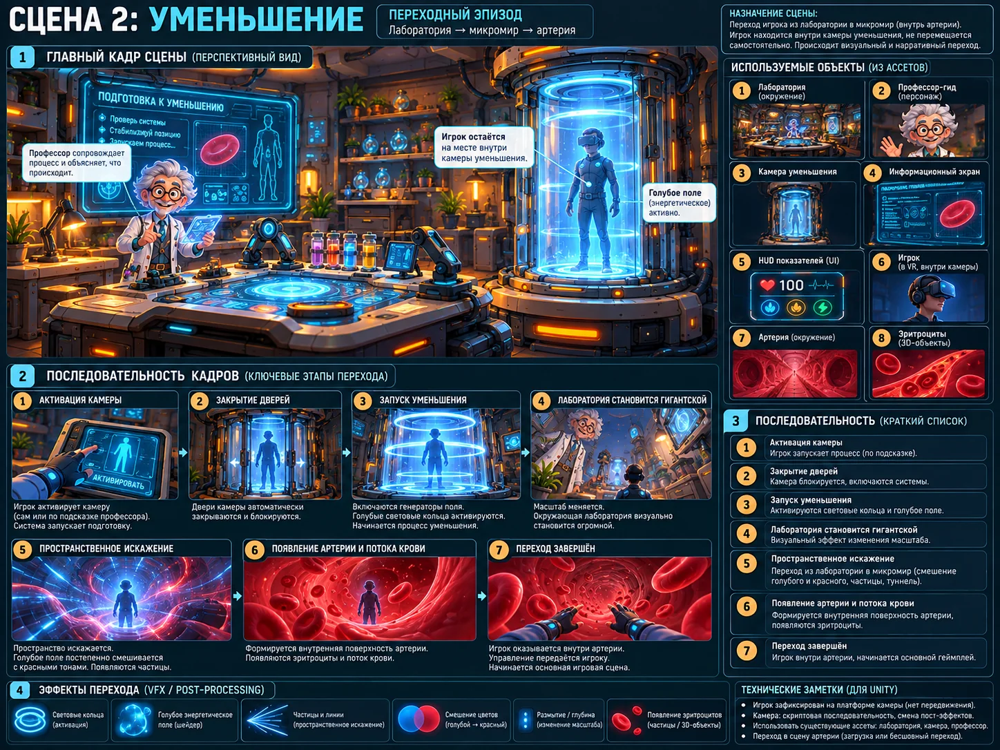

Scene 02 · 5:00–6:00
Уменьшение
Без затемнения перевести игрока из лаборатории в микромир.

Сценарная последовательность
Активация камеры
Световые кольца
Масштаб 1:1 → 1:10 000
Красный свет и сердцебиение
Проявление артерии
Запуск кровотока
Технические требования сцены
Это переходный эпизод, а не самостоятельная игровая локация. Используется один и тот же Transition-пресет в прямом и обратном направлении.
- Не отдельная gameplay-сцена, а Transition State.
- Позиция HMD не перемещается принудительно.
- Смешиваются две среды: лаборатория и артерия.
- Не использовать резкий camera cut.